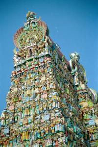

|
Mercredi 21 mars
Decidement, je suis amoureux des bus indiens. Pour quitter notre douce montagne
et notre petit resto sympa a Kodail, on a pris le bus. En fait, on ne savait
pas, mais c'etait un bus express, un peu plus cher, mais plus rapide. Pour gagner
du temps, on ne s'est pas arretes moins souvent. Non, ici pour que les bus soient
express, il faut prendre un chauffeur encore plus barge que les autres, qui
fonce encore plus vite que les autres, au mepris des regles les plus elementaires
de securite! Et quand on est sur une route de montagne, et en plus a l'arriere
du bus, la ou on sent bien que les amortisseurs sont uses, c'est impressionnant,
vous pouvez nous croire! D'ailleurs, on n'etait pas les seuls a se sentir remues,
il n'y a qu'a demander a ce petit garcon ou a cette dame qui ont laisse en souvenir
leur petit dej sur la route et dans l'allee du bus!!
Madurai, c'est une ville sympa. C'est assez gros, tres anime, mais en meme
temps pas trop sature par la circulation. Il y a essentiellement des velos,
des mobs, des chars tires par des boeufs (on en a vu plein, ils sont impressionnants
avec leurs immenses cornes peintes) mais peu de voitures et de bus.
On a visite son temple, gigantesque. Entoures de plusieurs tours geantes (tres)
chargees de sculptures representant des centaines de divinites colorees. Vraiment
impressionnant. Mais le spectacle est aussi a l'interieur... Lourdes et ses
vendeurs de Sainte Vierge en plastique, c'est pas grand chose a cote de cela!!!
Ici, on vend des "bondieseries" a l'interieur du temple, mais il y a aussi des
vendeurs de cartes postales, des dizaines de tailleurs qui font des fringues
sur mesures sur leurs antiques machines a pedale et des vendeurs de n'importe
quoi: des couteaux, des chaines, des colliers pour chiens, des brosses a cheveux...
un vrai marche! Dans le temple! Et cote symbole et idoles, la aussi, ils laissent
des religions sobres comme le catholicisme bien loin derriere. Ici, on s'agenouille
devant Ganesh. Dit comme cela, cela fait divinite, mais a bien y regarder, c'est
un gros elephant! Et puis il y a ce truc qui ressemble plus a de la magie ou
de la superstition qu'a un acte religieux: partout, ils collent des "boulettes"
de beurre sur les statues. Il y en a partout, on a l'impression de voir une
salle de classe bombardee de boulettes en papier par les cancres du fond! Et
en plus qui viseraient mal, il y en a partout... Sauf que cela degage une forte
odeur de beurre rance... Mais bon, chacun ses croyances. Et comme disait l'autre,
si Jesus etait mort noye, on aurait l'air malins avec un aquarium au dessus
de nos lits.
Jeudi 22 mars
Les indiens ont un petit signe bien a eux pour acquiescer: ils secouent ou
penchent legerement la tete de gauche a droite. On croirait qu'ils disent "non"
de la tete. Mais si on regarde bien, ils ne TOURNENT pas la tete de gauche a
droite, mais ils la PENCHENT, ce qui est tres different. Au debut, on se fait
avoir, comme Lionel tout surpris au resto quand le serveur disait "non" a tout
ce qu'il commandait! Puis, il s'est mis a la mode indienne pour mieux se fondre.
Les grands coups de tete venant du torse de ses debuts se sont transformes en
dodelinements completement indiens! Et maintenant il smurfe allegrement toute
la journee.
Le sport en Inde. Comme partout des qu'il y a des garcons, ca joue au foot.
Sous le soleil accablant de midi comme le soir! Et plusieurs connaissent Zidane.
Moins qu'en Jordanie tout de meme ou tout le monde nous en parlait des qu'ils
savaient s'adresser a des francais. Decidement, les footeux, ils se ressemblent
tous! Mais en fait, le veritable sport national leur vient des anglais: le cricket.
Dix fois plus pratique que le foot, on y joue dans chaque ville, chaque quartier,
chaque village, chaque champ. Meme les filles jouent au cricket a Kodaikanal,
en survetement bien sur, ce serait rude en sari (vetement traditionnel des femmes
indiennes)! Ca n'empeche pas qu'on n'a toujours pas compris les regles du jeu.
(normal, c'est anglais!)
Quand de France, donc de loin, on parle de l'Inde, on pense toujours a un pays
inquietant, sale, peu sur voire dangereux et ou pullulent les maladies. En fait,
ce doit etre que l'Inde est meconnue et l'image de violence vient peut-etre
des evenements sanglants lors de l'Independance. Sale, c'est assez vrai, il
manque des poubelles et un serieux recurage des cours d'eau. La population hyper
nombreuse n'y est surement pas pour rien. Je ne sais pas si c'est le cas mais
j'ai presque envie de parler de surpopulation. Inquietant, c'est peut-etre une
image basee sur l'idee d'un peuple aux visages severes et grouillant tant il
est important. Un sourire en appelant un autre, l'inquietude tombe. Quant a
la securite, on ne s'est jamais sentis menaces, de vols ou de quoi que ce soit
(si ce n'est de se faire arnaquer mais ca, ce n'est pas bien grave). On etait
moins tranquille en Italie et les evenements nous ont donnes raison. Alors stop
aux idees preconcues. (facile a dire...). Et pour les maladies, on a de bons
remedes et vaccins, et des precautions elementaires nous ont suffies jusqu'a
present: ne pas boire l'eau du robinet, pas de fruits sans les laver a l'eau
purifiee ou peles, se laver les dents (et oui, meme ca!) a l'eau purifiee avec
l'hydrochlonazone et non pas avec le micropur comme ils disent dans le routard
(ca ne sert qu'a conserver l'eau, pas a la purifier! donc ca ne nous sert a
rien, on ne va pas se ballader 2 mois avec la meme eau dans la gourde!).
Cinq heures de train, une heure de bus, on est a Pondichery, la plus francaise
des villes indiennes.
Suite du voyage : Pondichery ... chery
|
Inde
Madurai
|

Inde
Madurai
|
Inde
Madurai
|
Inde
Madurai
|
|
|